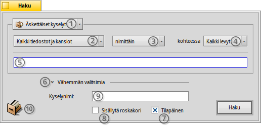
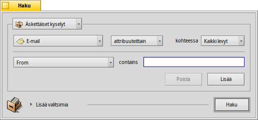
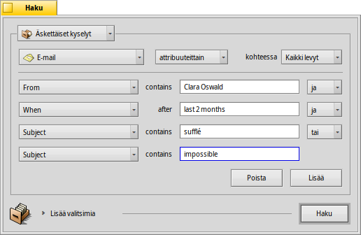
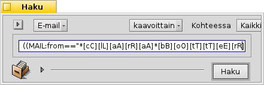
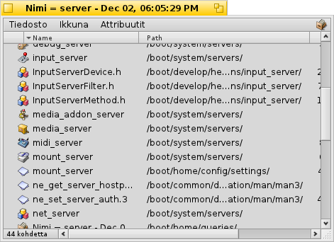

Suomi
Suomi Català
Català Deutsch
Deutsch English
English Español
Español Français
Français Italiano
Italiano Magyar
Magyar Polski
Polski Português
Português Português (Brazil)
Português (Brazil) Română
Română Slovenčina
Slovenčina Svenska
Svenska 中文 ［中文］
中文 ［中文］ Русский
Русский Українська
Українська 日本語
日本語| Hakemisto |
|
Etsintäikkuna Peruskyselyt - "nimellä" Kehittyneemmät kyselyt - "attribuutilla" Vielä edistyneemmät kyselyt - "kaavalla" Tulosikkuna Kyselymallinteet |
Kyselyt
Kysely on tiedostoattribuutteihin perustuva tiedostohaku ja se voidaan suorittaa Seuraajassa tai Pääteikkunassa. Kyselyt tallennetaan kansioon /boot/home/queries/ ja säilytetään oletuksena viimeiset seitsemän päivää ennen tyhjentämistä. Huomaa, että nämä eivät ole hakusi staattisia tuloksia, vaan kyselylomakkeita, jotka liipaisevat uuden haun aina avattaessa.
Mikä parempaa, sinun ei tarvitse kaksoisnapsauttaa kyselyn tekemiseksi uudelleen. Voit porautua tallennettuuun kyselyyn aivan kuin mihin tahansa kansioon napsauttamalla hiiren kakkospainikkeella ja navigoimalla alivalikoiden lävitse.
 Etsintäikkuna
Etsintäikkuna
Aloitat haun kutsumalla -valikkoa joko Työpöytäpalkista tai mistä tahansa Seuraaja-ikkunasta tai Työpöydältä (mikä on itse asiassa kokonäytön kokoinen Seuraaja-ikkuna). Pikanäpppäin on ALT F. Sinulle esitellään Haku-ikkuna:
Valitse nykyiset tai tallennetut kyselyt tai tallenna nykyiset hakuparametrit Kyselymallinteena.
Kavenna etsintäaluetta valikosta tiettyyn tiedostotyyppiin.
- Määritä hakumenetelmä:
- - perushaku tiedosto- tai kansionimellä
- - edistynyt haku, määritä hakutermeiksi yksi tai useampia attribuutteja
- - vieläkin edistyneempi haku, voit hienosäätää mutkikkaita hakutermejä
Valitse levyasema, jolta etsitään.
Kirjoita hakutermi.
Laajentaja piilottaa/paljastaa lisävalitsimet.
Ota pois valintaruutu , jos et halua kyselyn katoavan automaattisesti 7 päivän jälkeen.
Valitse valintaruutu , jos haluat etsiä myös roskakorista.
Valinnainen, kirjoita nimi tälle kyselylle, jos haluat tallentaa sen.
Kyselyn tallentamiseksi voit raahata ja pudottaa kuvakkeen minne tahansa. Kun sen tekee hiiren kakkospainikkeella, valikko tarjoaa tallentamisen mallinteena.
Peruskyselyt - "nimellä"
Jos haluat yksinkertaisesti löytää kaikki ne tiedostot ja kansiot liitetyiltä levyiltä, jotka täsmäävät tiettyyn hakulauseeseen, jätä hakumenetelmäksi vain , kirjoita hakutermi teksti-ikkunaan ja paina ENTER-näppäintä.
Kehittyneemmät kyselyt - "attribuutilla"
Voit luoda edistyneempiä kyselyjä etsimällä tiettyjen tiedostotyyppien attribuuttisen sisältä. Jotta tämä toimisi, attribuutit on indeksoitava.
Käynnistät tiedostotyypin asettamisen esimerkiksi valinnasta valintaan ja hakumenettelyn vaihto valintaan .
Tämä lisää ponnahdusvalikon teksti-ikkunan vasemmalle puolelle ja painikkeet ja sen alle. Valikosta voi valita, että mitä attribuuttia kyselee. Painikkeilla ja voit kysellä lisäattribuutteja ja poistaa niitä taas. Nämä attribuutit linkitetään loogisesti binaarilogiikan AND- tai OR-tiloilla.
Tehkäämme sähköpostikysely esimerkkinä:
Tämä on Haku-ikkunasi, kun etsit kaikkia niitä sähköpostiviestejä, jotka Clara Botters on lähettänyt sinulle viimeisen kahden kuukauden aikana ja joissa aiheena on "vibraphone" tai "skepticality".
Kuten näet, aikaperustaisten attribuuttien kautta hakeminen tukee joitakin hyödyllisiä lauseita: paitsi "viimeiset 2 kuukautta", voisit käyttää myös "tänään", "eilen", "maanantai" tai "viime maanantai" (mikä olisi maanantai viime viikolla), tai "viimeiset 2 minuuttia/tuntia/päivää/viikkoa".
Hyvä tapa rajoittaa hakutulosten lukumäärää.
Vielä edistyneemmät kyselyt - "kaavalla"
Kaavakyselyn kirjoittaminen käsin on puuduttavaa ja todella aika epäkäytännöllistä. Mutta sillä on silti käyttöä.
Ota yllä oleva kysely attribuutilla Claran niistä sähköpostiviesteistä, jotka koskevatt vibrafonista jne. Jos sinulla on kaikki attribuutit ja niiden hakutermit asetettuna, yritä vaihtaa -tilaan ja saat näkyviin tämän yksirivisen kyselymerkkijonon:
Vielä kerran kun teksti on muokattu luettavammaksi:
(((((MAIL:from=="*[cC][lL][aA][rR][aA] [bB][oO][tT][tT][eE][rR][sS]*")
&&(MAIL:when>=%2 months%))
&&(MAIL:subject=="*[vV][iI][bB][rR][aA][pP][hH][oO][nN][eE]*"))
||(MAIL:subject=="*[sS][kK][eE][pP][tT][iI][cC][aA][lL][iI][tT][yY]*"))
&&(BEOS:TYPE=="text/x-email"))
Mihin käyttöön?
Voisit kopioida ja liittää merkkijonon sähköpostiviestiin, foorumille tai IRC-kanavalle toisten käyttöön vianjäljitystä varten.
Voit käyttää tätä menetelmää kyselyn rakentamiseki -tilassa ja vaihtaa sitten -tilaan hakumerkkijonojen helpompaa tuottamista varten Pääteikkunassa tai skriptissä käyttöä varten.
Voit hienosäätää kyselyäsi lisäämällä lainausmerkkejä milloin tarvetta ilmenee, tekemällä osan kirjainkoosta riippuvaksi tai muuttamalla loogisen yhdistelmän negaatioksi "=="-muodosta "!="-muotoon NOT AND. Tarvitset ainoastaan säännöllisten lausekkeiden ja ehkä joidenkin skriptausperusteiden ymmärtämistä.
Tulosikkuna
Haun käynnistymisen jälkeen Etsi-ikkuna korvautuu tulosikkunalla. Tässä on esimerkki, jossa hakuterminä on "server":
Lukuunottamatta harmaa taustaa tulosikkunat ovat tarkalleen samanlaisia kuin muut Seuraaja-ikkunat. Jotkut asiat ovat mainitsemisen arvoisia:
Voit avata tiedoston tai kansion sijainnin kaksoisnapsauttamalla sen polkuattribuuttia.
Valikolla tai näppäimillä ALT G pääset takaisin Etsi-ikunaan ja voit parannella kyselyäsi.
Kysely on elossa, toisin sanoen, jos tiedosto, joka täsmää hakuukriteeriisi, ilmaantuu tai katoaa järjestelmästäsi, tämä muutos heijastuu tulokseesi ajantasaisesti.
Voit liittää järkevän attribuuttiasettelun tietyn tiedostotyypin kyselytulokseen. Avaa kansio, joka sisältää ne tiedostotyyppitiedostot, joille haluat luoda mallinteen ja järjestää attribuutit siten kuin haluat kyselytuloksesi esitettävän. Kopioi tämä asettelu valikolla .
Avaa /boot/home/config/settings/Tracker/DefaultQueryTemplates, luo uusi kansio nimellä group/filetype, korvaten kauttaviivan alaviivalla, esimerkiksi "audio_x-mp3". Avaa uusi kansio ja liitä aiemmin kopioitu asettelu -valikolla.
Kyselymallinteet
Jos kaksoisnapsautat tallennettua kyselyä, tiedostohaku käynnistyy taas kerran ja tulosikkuna avautuu välittömästi. Et ehkä kuitenkaan halua etsiä tarkalleen näillä hakuparametreilla, vaan käyttää sitä vain hiukan muotoillun kaavan aloituspisteenä.
Käyttämällä -valikkorivillä (katso (1) näytönkaappauksessa ylhäällä) tai raahaamalla ja pudottamalla kuvakkeen (10) minne tahansa hiiren kakkospainikkeella, voit luoda juuri sellaisen mallinteen. Sen kaksoisnapsauttaminen ei avaa tulosikkunaa, vaan Etsi-paneelin, antaen mahdollisuuden nopeasti vaihtaa hakumerkkijonoja ja lisätä tai poistaa attribuutteja.
Milloin valitset kyselyn tallentamisen mallinteena, ne luetellaan Etsi-paneelin äskettäisten kyselyjen valikossa.